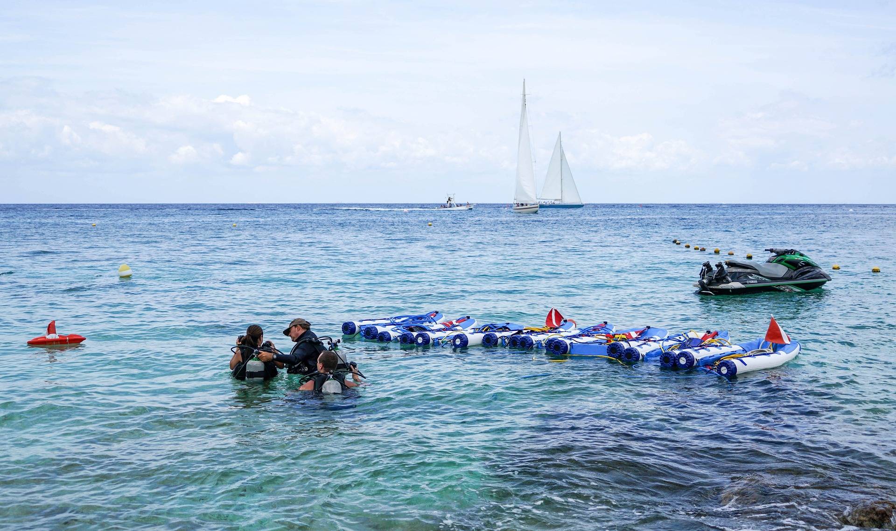
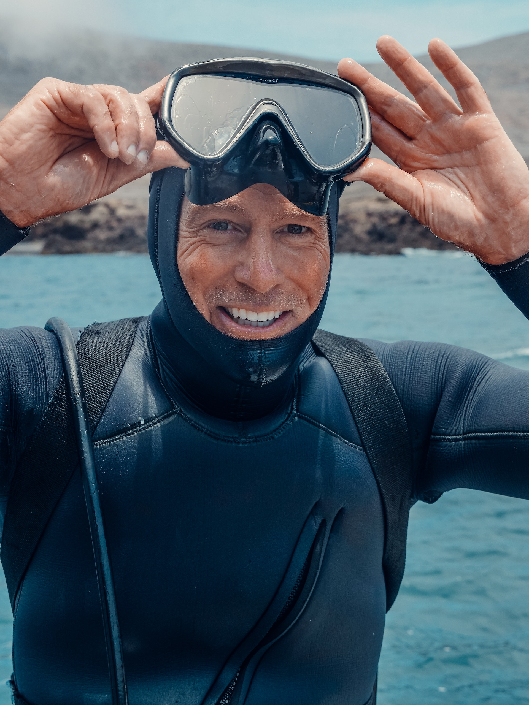
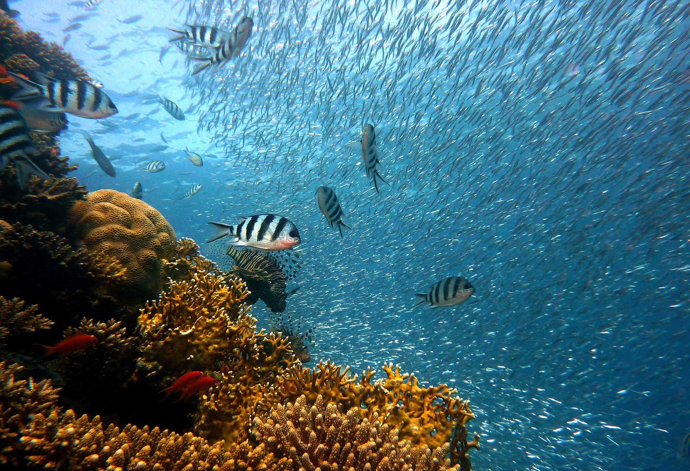
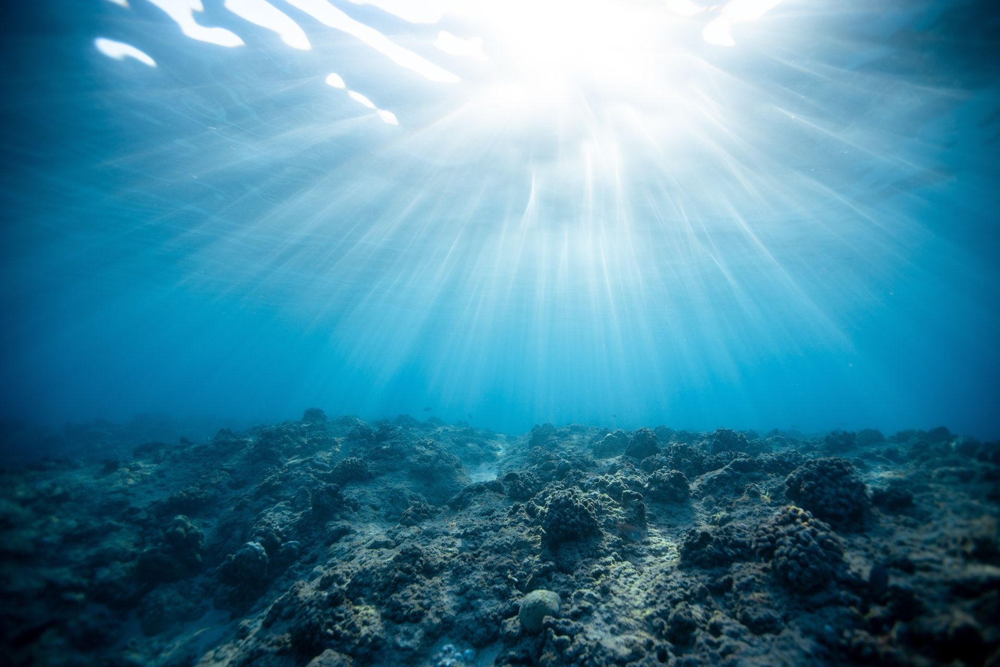
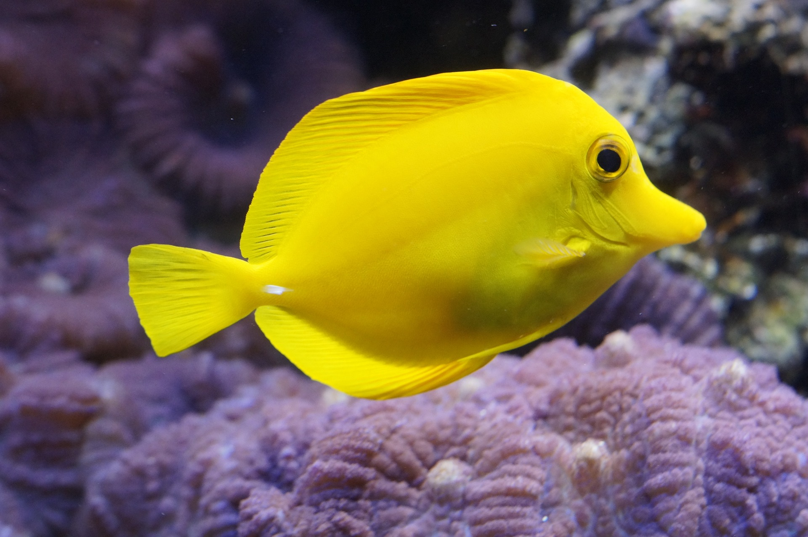

Step 1: Get CertifiedThe first step to becoming a certified diver is to take a scuba diving course. It is essential for anyone who wants to dive safely and comfortably underwater. During the course you will learn equipment selection and maintenance, underwater communication, diving physiology, and emergency procedures. Once you pass the course and meet the certification requirements, you will receive a scuba diving certification card, which allows you to rent or purchase gear and participate in diving activities worldwide. Contact us for a 10% discount on our courses. |
0 m |
 |
|
 |
100 m |
Step 2: Buy or Rent Dive GearOnce you've completed your course, you'll need to buy or rent scuba diving equipment. The essential gear includes: 1. MaskGives clear vision and keeps water out of your nose and eyes. 2. SnorkelLets you breathe at the surface, conserving air in your tank. 3. FinsHelp you swim efficiently and reduce fatigue underwater. 4. Wetsuit or DrysuitProtects your body from cold water and stings or scrapes. 5. Weight BeltCounterbalances your body's natural buoyancy to keep you submerged. 6. RegulatorDelivers breathing air from the tank and regulates the flow. 7. BCD (Buoyancy Compensator Device)Controls your buoyancy so you can ascend and descend smoothly. 8. Dive ComputerTracks depth, time, and nitrogen levels to prevent decompression sickness. 9. TankHolds the compressed air you breathe while diving. Contact us to get 5–25% off professional gear. |
Step 3: Find a Dive SiteFinding a suitable dive site is key to a safe and enjoyable experience. After completing your course and getting your gear, here are the best ways to find one: Ask your local dive shopThey can recommend sites based on your experience level and what type of diving you want to do. Search onlineWebsites and forums dedicated to scuba diving list sites all around the world with reviews and conditions. Contact a local diving organisationThey provide recommendations, local regulations, and current conditions. Always check the weather, tides, and never dive alone. See our picks for the best diving sites in the world. |
200 m |
 |
|
 |
300 m |
Step 4: Go DivingOnce certified, geared up, and at your chosen site, you are ready to dive. Before going in: Dive buddyAlways dive with a buddy or a group. If you have no partner, join a local dive club or organised trip. Equipment checkVerify everything is working and your tank has enough air. EssentialsPack a towel, change of clothes, sunscreen, and snacks. Diving is physically demanding. Safety firstInform someone of your dive plan, expected return time, and emergency contacts. Always prioritise safety and respect local regulations. Join our community to connect with diving enthusiasts. |
Step 5: Have Fun!YOU'RE READY TO HAVE SOME FUN! Scuba diving lets you explore the underwater world and feel a unique sense of weightlessness. With the right training, gear, and preparation, it can be incredibly safe and enjoyable. While diving, you can marvel at coral reefs, encounter marine life, and experience the calm of the deep. Whether exploring a shipwreck, swimming with sharks, or taking a leisurely reef dive, the possibilities are endless. Always prioritise safety, follow your instructor's guidelines, and respect the underwater environment. With the right mindset, diving is an adventure you will never forget. |
400 m |
 |